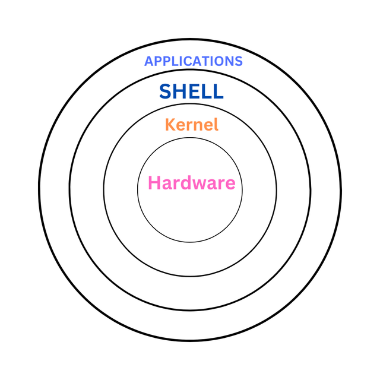

Shell Scripting
A shell provide an environment to a user to execute commands and interact with kernel.
- Shell script consist of set of commands to perform a task.
- All the commands execute sequentially.
- Some task like file manipulation, program execution, user interaction, automation of task etc can be done

Scripting format
#!/bin/bash
Basic Script
#!/bin/bash
echo "Hello, World!"
Comments
#This is a comment (single line)
Variables
#!/bin/bash
name="John"
age=18
host=$(hostname)
echo "Hello, $name"
echo "$host age is $age"
Taking inputs from
read any-variable
Constant variables
readonly name="Daksh"
name="john"
echo"$name"
Output:Daksh
If-Else Statements
If-else statements are used to make decisions in your script.
# If-Else Example
if [ "$1" -gt 100 ]
then
echo "The number is greater than 100."
else
echo "The number is 100 or less."
fi
If-Else Example 2
if [ -e filename.txt ]
then
echo "file exist"
else
echo "file does not exist"
fi
Switch Cases
Switch cases (using `case` in shell scripting) allow you to execute different parts of code based on the value of a variable.
# Case Example
case "$1" in
1)
echo "Starting the service..."
;;
2)
echo "Stopping the service..."
;;
3)
echo "Restarting the service..."
;;
*)
echo "Usage: $0 {start|stop|restart}"
exit 1
;;
esac
Loops
Loops are used to repeat a set of commands multiple times. There are three main types of loops in shell scripting: for loops, while loops, and until loops.
A for loop is used to iterate over a list of items.
# For Loop Example
for i in 1 2 3 4 5
do
echo "Iteration $i"
done
In this example, the loop iterates over the numbers 1 to 5, printing the iteration number each time.
# For Loop Example 2
for x in raj om shiv
do
echo "My name is $x"
done
In this example, the loop iterates over the words, printing the words each time.
While Loop
A while loop repeats as long as a specified condition is true.
# While Loop Example
count=0
num=10
while [ $count -le $num ]
do
echo "Numbers are $count"
let count++
done
In this example, the loop runs as long as $count is less than or equal to 10, incrementing the count each time.
Until Loop
An until loop repeats until a specified condition becomes true.
# Until Loop Example
count=0
num=10
while [ $num -eq $count ]
do
echo "$num"
let num--
done
In this example, the loop runs until $count is equal to 0, decrementing the count each time.
Infinite Loop
An infinite loop runs indefinitely and only stops when it is manually terminated. Here's an example using a while loop:
# Infinite Loop Example
while true
do
echo "Hi"
sleep 2s
done
In this example:
while true: The loop condition is always true, so the loop will run indefinitely.do: This starts the body of the loop.echo "Hi": This prints "Hi" to the terminal each time the loop runs.sleep 2s: This pauses the loop for 2 seconds before the next iteration. The sleep command is used to delay the next command execution.done: This ends the body of the loop.
You can stop an infinite loop manually by pressing Ctrl + C in the terminal where the script is running.
Functions
Functions allow you to group commands into reusable blocks. You can define a function using the following syntax:
function_name() {
# commands
}
To call a function, simply use its name. Here is an example:
# Function Example
greet() {
echo "Hello, $1!"
}
greet "Alice"
In this example, the function greet takes one argument and prints a greeting message. When called with greet "Alice", it outputs Hello, Alice!